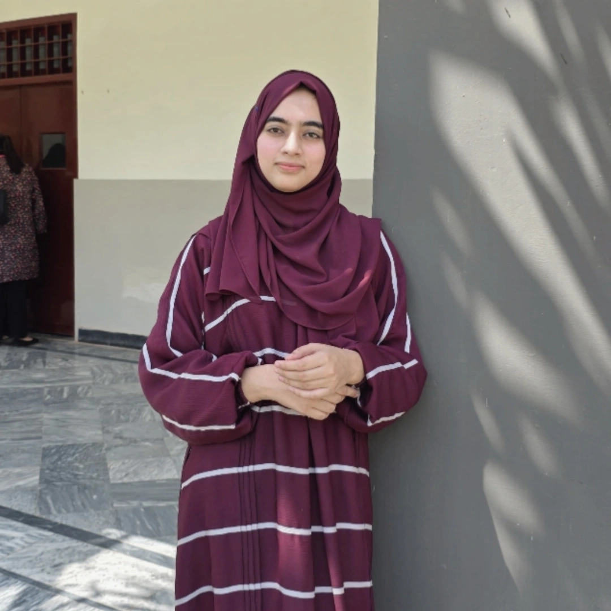

LUMORA · THE ART OF INQUIRY
The Writer
A little about what I read, what I notice, and why this journal exists
Ifrah Pervez
B.S. English
Department of Humanities
COMSATS University Islamabad, Sahiwal Campus
My interests move between English language and literature, newspaper editorials, contemporary political and international affairs, social and economic developments, education, and the questions that shape public life.
I value reading across perspectives, examining arguments and connecting ideas. Writing offers a way to think through those questions carefully and to make observations more precise.
A space to think in public
This website is my personal intellectual space: a place to preserve my writings, document my development as a writer, explore important questions and share ideas with readers. Some entries will become developed essays; others may remain brief observations or early thoughts.
The journal is intended to grow honestly, one piece at a time, without pretending that every question has an easy answer.
